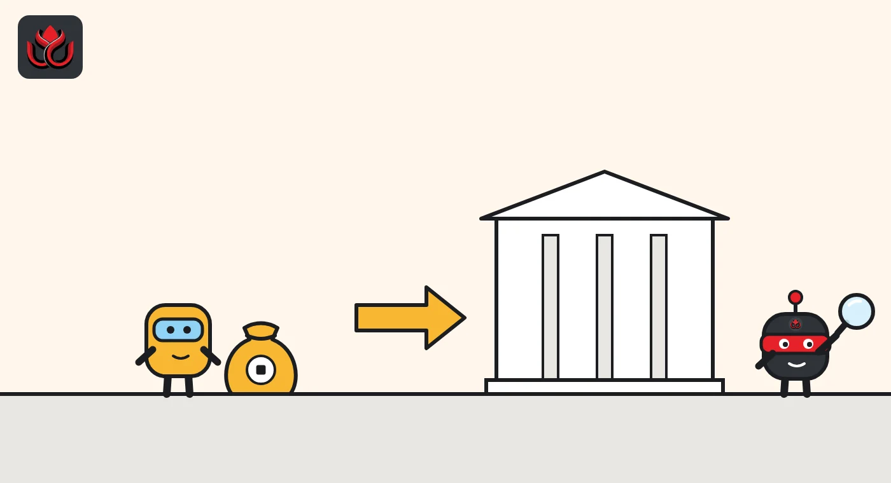
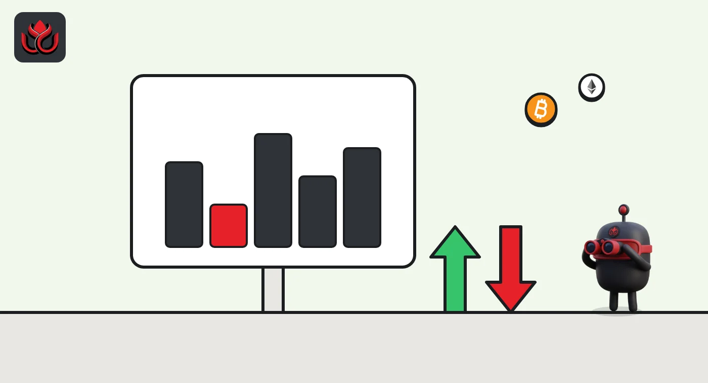

What is a bitcoin ETF? How spot funds hold coins and what daily flows mean
A spot bitcoin ETF is a fund that holds real bitcoin and trades on a stock exchange like a share. Big brokers create and redeem its shares in blocks, and the daily flow numbers measure exactly those creations and redemptions.
Key points
- A spot bitcoin ETF holds actual bitcoin with a custodian and sells shares on a stock exchange, so investors get price exposure through a normal brokerage account.
- Only authorized participants, which are registered broker-dealers, can create or redeem shares directly with the fund, in blocks called baskets.
- A daily inflow means new shares were created and the fund took in bitcoin or cash to buy it. An outflow means shares were redeemed.
- The share price can differ from the value of the bitcoin inside. Creations and redemptions are the tool that pulls the two back together.
What is a spot bitcoin ETF?
An exchange-traded fund (ETF) is a fund whose shares trade on a stock exchange all day, like a company's stock. A spot bitcoin ETF is one that holds bitcoin itself, rather than futures contracts or shares of crypto companies. When you buy a share, you own a slice of a pool of bitcoin kept by a custodian.
The largest example is BlackRock's iShares Bitcoin Trust, ticker IBIT. According to BlackRock's product page, the fund launched on January 5, 2024, began trading on Nasdaq on January 11, 2024, and charges a fee of 0.25% a year. Its prospectus dated July 31, 2025, says the bitcoin is held mainly by Coinbase Custody Trust Company, with The Bank of New York Mellon acting as cash custodian and administrator. It also names Anchorage Digital Bank as an additional bitcoin custodian, though the sponsor said it had no plans to move coins there. Coinbase, Inc. acts as the prime execution agent that handles the fund's bitcoin trades.
This guide uses IBIT's documents as the worked example because they spell out the plumbing in detail. Other US spot bitcoin ETFs follow a broadly similar design, but each has its own fee, custodian and rules, so check the fund's own prospectus.
How are ETF shares created and redeemed?
Ordinary investors buy and sell ETF shares from each other on the exchange. New shares only come into existence through a separate wholesale channel. In IBIT's case, the prospectus says only authorized participants can create or redeem shares. These are registered broker-dealers that have signed agreements with the sponsor and the trustee.
Shares are created in baskets of 40,000 shares. On June 25, 2025, one basket required 22.72 bitcoin, or $2,448,096.36, the prospectus shows. The trustee sets the bitcoin or cash amount for a basket each day Nasdaq is open.
To create a basket, an authorized participant delivers bitcoin or cash to the trust and receives 40,000 new shares, which it can sell on the market. To redeem, it hands 40,000 shares back and receives bitcoin or cash. The prospectus says authorized participants will deliver only bitcoin or cash to create shares, and that redemptions can be settled in either form. When cash is used, the trust buys or sells the bitcoin itself.

Why can the share price differ from the bitcoin inside?
The fund calculates a net asset value (NAV), the value of its bitcoin minus costs, once per business day. IBIT values its bitcoin using the CME CF Bitcoin Reference Rate, New York Variant, measured as of 4:00 p.m. ET over a 3:00 p.m. to 4:00 p.m. window. NAV is typically released by 5:30 p.m. ET and generally no later than 8:00 p.m. ET. If the index is unavailable or seen as unreliable, the sponsor can use a fair-value process instead.
The share price, meanwhile, moves with buying and selling on the exchange. The prospectus warns: "Market prices for the Shares may be different from the NAV." When shares trade above the value of the bitcoin inside (a premium), an authorized participant can create new shares and sell them, which pushes the price down. When they trade below (a discount), it can buy shares cheaply and redeem them, which pushes the price up. This arbitrage is what keeps the gap small.
During trading hours, the fund also publishes an intraday indicative value every 15 seconds. It starts from the previous day's NAV and moves with the CME CF Bitcoin Real Time Index, so it is only an estimate, not a live NAV.
How is an ETF different from holding bitcoin yourself?
Buying bitcoin directly means holding it on an exchange account or in your own wallet. You can send it to anyone, at any hour, and you are responsible for keeping the keys safe. Buying an ETF share means holding a security in a brokerage account. You never touch a private key, but you also cannot move the coins on the blockchain.
There are practical differences too. Bitcoin trades around the clock, while ETF shares trade only during stock market hours. IBIT's prospectus says its intraday indicative value is published from 9:30 a.m. to 4:00 p.m. ET. News that breaks on a Saturday is priced into bitcoin straight away, but into the ETF only when the market opens on Monday.
An ETF also brings fund costs and fund rules. The trust does not pass on coins from forks or airdrops, and the fee is charged whether the price rises or falls. In return, investors get a product that fits inside retirement accounts and standard brokerage tools, and a sponsor that handles custody, accounting and reporting.

How do you read daily ETF flow numbers?
A daily flow figure is the dollar value of shares created minus shares redeemed on that day. A positive number (an inflow) means the fund issued new shares and its bitcoin holdings grew. A negative number (an outflow) means shares were redeemed and the fund held less bitcoin afterward.
Three tips help when reading them:
- Flows are not trading volume. Billions of dollars of shares can change hands between investors with zero flow, because no shares were created or redeemed.
- You can check a flow yourself. Issuer pages list shares outstanding each day. The change in shares outstanding, multiplied by NAV per share, gives roughly the same number the flow trackers report.
- Look at the total, not one fund. Money can move from one ETF to another. The sum across all spot funds says more about demand for bitcoin than any single fund.
Big days make headlines. On October 22, 2026, US spot bitcoin ETFs lost $636 million in a single session, LC Insight reported, and ether funds had a record outflow month in October, covered here.
How big are these funds?
Fund size changes every day, with both flows and the bitcoin price. Because the fund holds only bitcoin, a 10% fall in bitcoin cuts its net assets by about 10% even if no investor sells. Bitcoin traded at about $77,700 on CoinGecko at 8 a.m. ET on November 2, 2026, down about 8% over 30 days.
The basket numbers show what each share holds. On June 25, 2025, 40,000 IBIT shares stood for 22.72 bitcoin, or about 0.00057 bitcoin per share, the prospectus shows. That amount drifts down slowly as the yearly fee is paid out of the fund's bitcoin. For a live number, check the issuer's own product page, which lists net assets, shares outstanding and the bitcoin held, usually updated each business day.
What are the risks?
An ETF removes the need to manage private keys, but it does not remove bitcoin's risks. IBIT's prospectus lists, among others:
- Extreme price swings in bitcoin.
- Security threats to the custodian's accounts and the permanent loss of bitcoin if keys are stolen or lost.
- A breakdown of creations and redemptions, which could let the share price drift away from NAV.
- Authorized participants or trading counterparties stepping back, which can hurt liquidity.
- Regulatory and tax uncertainty.
- Forks and airdrops: the trust abandons them, so shareholders do not receive any new coins.
There is also a cost. A 0.25% yearly fee is taken from the fund's assets, so the bitcoin behind each share slowly shrinks over time.
LC Insight analysis
This section is our reading of the facts above, not a statement of fact.
- Daily flow numbers are useful but noisy. A single big day says less than a run of days in the same direction, and month totals say more still.
- The quiet risk is reliance on a few service providers. Most of IBIT's bitcoin sits with one main custodian, so the fund depends on that firm's security and on brokers keeping the arbitrage working in a stressed market.
- The ETF keeps stock market hours while bitcoin never closes. Weekend news hits the coin first and the fund only on Monday, which is when gaps between the two show up.
What's next
- Multiday runs of inflows or outflows across all spot funds
- Premiums or discounts to NAV during sharp price moves
- Changes to custodians or creation rules in new prospectus filings
Frequently asked questions
Do I own bitcoin if I buy a bitcoin ETF?
No. You own shares of a trust that holds bitcoin. You cannot withdraw the coins or send them on the blockchain, and only authorized participants can redeem shares for bitcoin or cash.
When do bitcoin ETFs trade?
They trade during stock exchange hours. IBIT's intraday indicative value is published from 9:30 a.m. to 4:00 p.m. ET, while bitcoin itself trades around the clock.
What is an authorized participant?
A registered broker-dealer that has a contract with the ETF's sponsor and trustee and is allowed to create and redeem shares in baskets, which for IBIT means 40,000 shares at a time.
Does an inflow mean the fund bought bitcoin that day?
Usually it means new shares were created and the fund received bitcoin, or cash it then used to buy bitcoin. Exact timing depends on how the creation was settled.
Disclaimer. This article is based on public information and the sources listed below as of the update time shown. It is for information only and is not investment, legal or tax advice. Figures may change as companies and authorities publish new data.